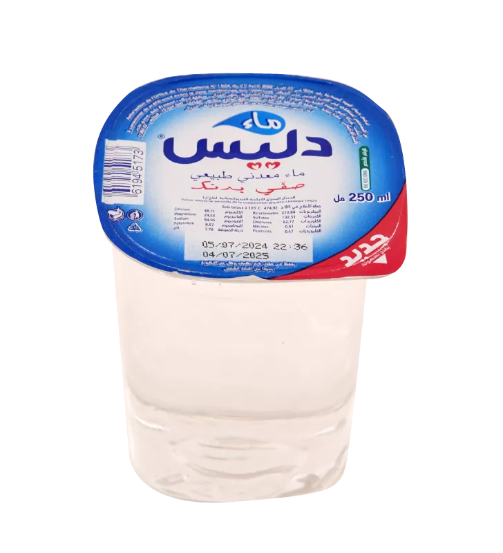
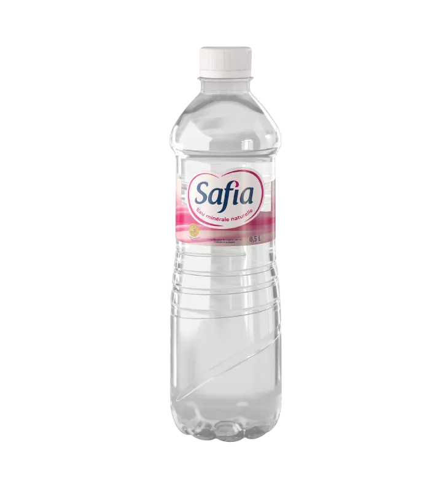
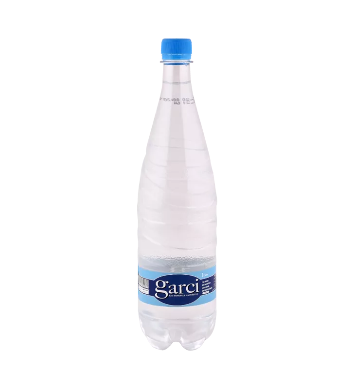
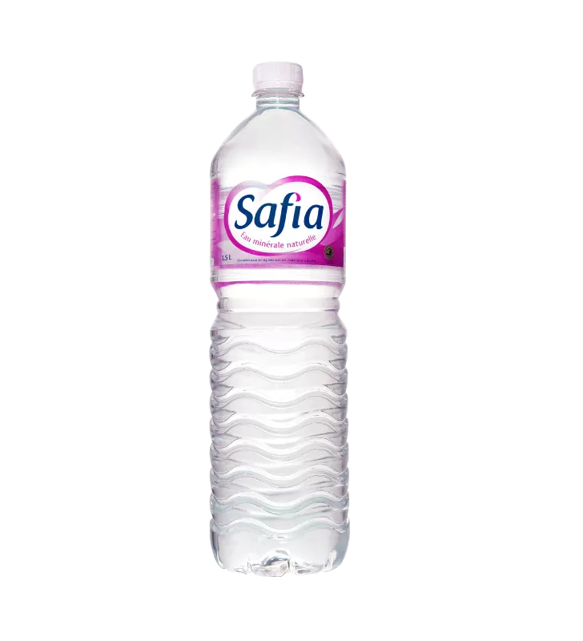
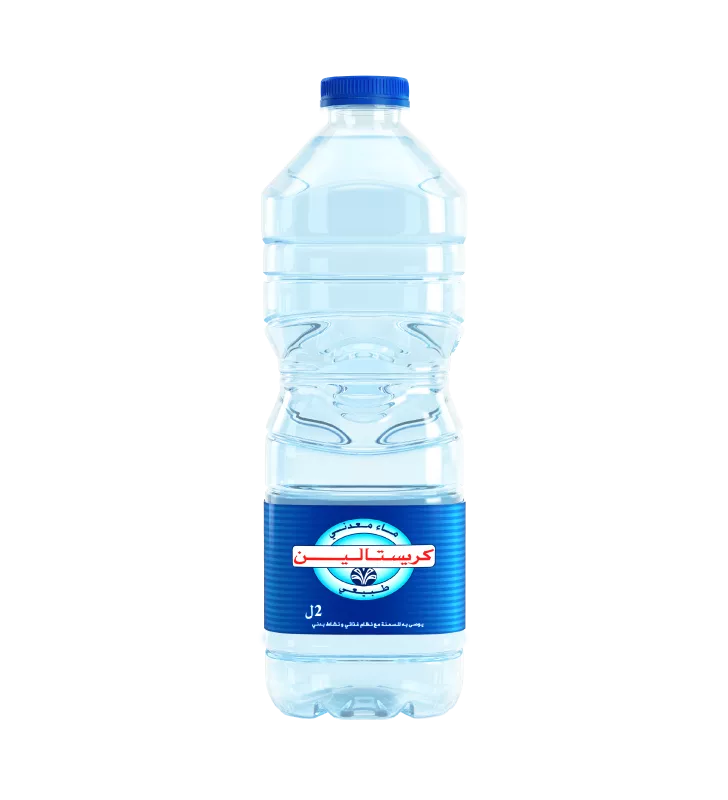
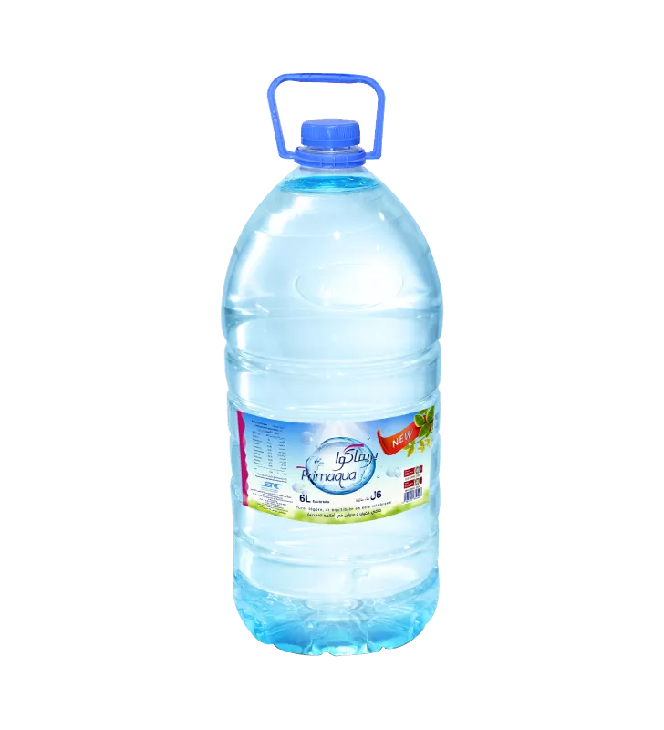
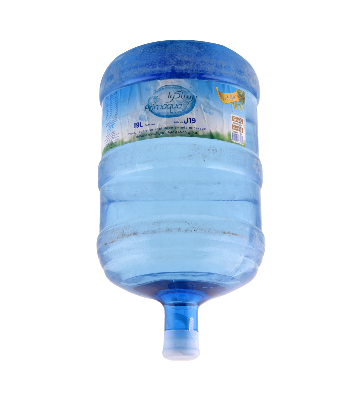

Le filtre « ≤ 0,75 L » regroupe les 0,25 et 0,5 L ; « ≥ 5 L » regroupe les bidons de 6 L et les bonbonnes de 19 L. La stika = le pack de 6 bouteilles (12 pour les 50 cl) ; les grands formats se vendent à l'unité.
Eau minérale naturelle — issue d'une source souterraine protégée, avec une composition minérale stable et garantie. Aucun traitement chimique n'est autorisé.
Eau de source — souterraine et naturellement potable elle aussi, mais sa composition peut varier dans le temps ; les exigences sont moins strictes.
Eau traitée (eau de table) — eau rendue potable par traitement, quelle que soit son origine.
Eau gazeuse — eau avec bulles, naturelles (comme Garci ou Aïn Oktor) ou ajoutées.
Classification et compositions transcrites du tableau de l'Office du Thermalisme (organisme officiel tunisien), publié par le Dr Ing. Imed Houcine — voir la publication (mai 2024). Le détail par marque (calcium, sodium, pH…) est dans « Composition » sur chaque fiche.
Comparez les prix de l'eau minérale en Tunisie — les prix sont mis à jour chaque jour.
Les marques gagnantes — le prix le moins cher constaté pour Stika 1,5 L vendu en Tunisie.
قالَ سعدُ بنُ عُبادةَ رضي الله عنه: يا رسولَ اللهِ، إنَّ أُمِّي ماتت، أفأتصدَّقُ عنها؟ قال: «نعم». قلتُ: فأيُّ الصَّدقةِ أفضلُ؟ قال: «سَقْيُ الماءِ»
Prix bouteille et stika relevés chez Géant, Carrefour, Monoprix et Aziza — la flèche ↓ marque l'enseigne la moins chère. Le bouton + en début de ligne ajoute le produit à votre commande, livrée chez vous.
L'historique démarre le 25 septembre 2026 — la courbe s'allonge jour après jour.
Au dernier relevé, la bouteille de 1,5 L d'eau plate la moins chère est à 0,610 DT (Bargou, Marwa et Melliti), soit 3,660 DT la stika de 6 bouteilles. Le classement complet des marques est mis à jour chaque jour en haut de cette page.
Au dernier relevé, la stika de 6 bouteilles de 1,5 L la moins chère coûte 3,540 DT en grande surface (Bargou et Melina). Selon la marque, la stika 1,5 L va de 3,540 DT à 4,920 DT. Activez le bouton « Stika » en haut de la page pour voir tous les prix en stika, marque par marque et enseigne par enseigne.
En Tunisie, la stika est le pack de 6 bouteilles d'eau (12 pour les petites bouteilles de 50 cl), le format le plus acheté par les familles. Sur ce site, chaque produit affiche le prix de la bouteille et celui de la stika.
Les prix sont relevés automatiquement chaque jour sur les boutiques en ligne des grandes surfaces tunisiennes : Géant Drive, Carrefour, Monoprix et Aziza. Ils sont indicatifs et peuvent varier selon le magasin et les promotions du moment.
Ajoutez vos produits avec le bouton +, indiquez votre téléphone et votre adresse (ou localisez-vous d'un clic), puis envoyez la commande — elle nous arrive sur WhatsApp. Nous revenons vers vous avec le prix total et les frais de livraison pour confirmer. Vous ne payez qu'à la livraison, et l'envoi de la commande ne vous engage à rien.
D'après les fiches de l'Office du Thermalisme (2024), l'eau embouteillée la moins minéralisée de Tunisie est Hayet (résidu sec de 238 mg/L), suivie de Jannet (272), Sabrine (303) et Safia Aïn Mizeb (308). Les plus minéralisées sont les eaux gazeuses Garci (1 677 mg/L) et Aïn Oktor (1 680 mg/L). Ouvrez « Composition » sur la carte d'une marque pour le détail (calcium, sodium, pH…), ou triez par minéralité avec le menu en haut de page.
L'eau minérale naturelle vient d'une source souterraine protégée et a une composition stable et garantie, sans aucun traitement. L'eau de source est aussi souterraine et naturellement potable, mais sa composition peut varier. L'eau de table (traitée) est rendue potable par traitement. Utilisez les boutons Minérale / Source / Traitée en haut de la page pour filtrer les marques — classification issue du tableau officiel de l'Office du Thermalisme.
26 marques vendues en Tunisie : Safia, Sabrine, Marwa, Melliti, Garci, Cristaline, Fourat, Dima, Mira, Pristine, May, Jannet, Jektiss, Melina, Aqualine, Brima, Denya, Main, Palma, Rim, Vivian, Primaqua, Délice, Beya et Tijen — eaux plates et gazeuses.
Une remarque, un prix à corriger, une marque manquante, une idée ? Écrivez-nous.